Atera Human Breast Cancer
Source:vignettes/atera_human_breast_cancer.Rmd
atera_human_breast_cancer.Rmd1 Overview
This tutorial reads the 10x Atera whole-transcriptome preview dataset of human invasive breast carcinoma into an on-disk GiottoDisk project. It then filters, clusters and names the cells, and looks at the tissue’s spatial organization: spatially variable genes, co-expression modules, signature enrichment and the cell types that sit next to each other.
The ingestion loads the individual transcripts and aggregates them into cells. Both steps can be skipped in favor of the qv >= 20 expression matrix that 10x provides.
Note that currently transcript loading is needed for GiottoLens compatibility, but this is expected to change in the future.
2 Install extra packages
2.1 arrow installation
Atera datasets require arrow with ZSTD support to work with parquet files.
has_arrow <- requireNamespace("arrow", quietly = TRUE)
zstd <- TRUE
if (has_arrow) {
# check arrow_info() to see that zstd support should be TRUE
# See https://arrow.apache.org/docs/r/articles/install.html for details
zstd <- arrow::arrow_info()$capabilities[["zstd"]]
}
if (!has_arrow || !zstd) {
# install with compression library needed for 10x parquet files
# this may take a while
Sys.setenv(ARROW_WITH_ZSTD = "ON")
install.packages("arrow",
repos = c("https://apache.r-universe.dev", "https://cloud.r-project.org"),
type = "source")
}2.2 SedonaDB and DuckDB installation
GiottoDisk runs spatial joins, such as the aggregation of transcripts into cells below, in SedonaDB when it is installed, and in DuckDB otherwise. Both are optional; without them it falls back to tiled terra operations, which are much slower at this scale.
install.packages("sedonadb",
repos = c("https://apache.r-universe.dev", "https://cloud.r-project.org")
)
install.packages("duckdb")Loading SedonaDB can print messages about PROJ or GDAL data directories it did not find. They do not affect the steps in this tutorial.
2.3 smotif installation
The cell-cell interaction section at the end uses smotif and its Rust backend smotifrs to count cell type motifs:
install.packages(c("smotif", "smotifrs"),
repos = c("https://drieslab.r-universe.dev", "https://cloud.r-project.org")
)2.4 Giotto extensions
This tutorial uses GiottoDisk for on-disk processing. These are preview dev builds off the dev and gsource Giotto package branches. If GiottoDisk has not been installed yet, use the following:
# GiottoDisk install
GiottoUtils::suite_install("GiottoDisk")
# Optional for matrix maths speedup:
install.packages("GiottoKernels",
repos = c("https://giotto-suite.r-universe.dev", "https://cloud.r-project.org")
)3 Dataset explanation
This tutorial uses 10x Genomics’ FFPE Human Breast Cancer preview dataset from their Atera In Situ platform. The data were generated with a pre-commercial version of the Atera Whole Transcriptome Assay (WTA) on an FFPE section of human breast cancer. The panel targets 18,028 genes, and 170,057 cells are segmented.
3.1 Why the Xenium reader
10x converted this preview dataset to the Xenium Onboard Analysis
output format. The folder has an experiment.xenium
manifest, a morphology_focus/ image folder, and
transcripts.parquet, cell_boundaries.parquet
and cell_feature_matrix.h5 files, all laid out like a
Xenium run. It is read here with
createGiottoXeniumObject().
createGiottoAteraObject() is meant for the output of the
commercial Atera instrument (Atera v1), which ships its data as zarr
archives instead. See the Atera Human
Kidney tutorial for that layout.
3.2 Download links
The files are available from the 10x Genomics dataset page.
curl link from 10x genomics
# Output Files
curl -O https://s3-us-west-2.amazonaws.com/10x.files/samples/atera/dev/WTA_Preview_FFPE_Breast_Cancer/WTA_Preview_FFPE_Breast_Cancer_outs.zipThe zipped outputs are large (about 55 GB, most of it
transcripts.parquet, transcripts.zarr.zip and
morphology.ome.tif). The GiottoDisk project built below
takes another 26 GB.
4 Setup
This workflow uses the on-disk backend from GiottoDisk.
library(arrow) # this must be libraried before terra or GiottoClass
library(Giotto)
library(GiottoDisk)
data_dir <- "path/to/WTA_Preview_FFPE_Breast_Cancer_outs"
project_dir <- "path/to/atera_project"
# set an appropriate amount of parallel workers for your computer
future::plan(future.mirai::mirai_multisession, workers = 8)The timings quoted below come from a run with 8 workers on an Apple silicon Mac. Reading the transcripts was the most memory-intensive step of ingestion, at about 24 GB.
5 Read the data
Atera data is too large to process in memory. We will be using a GiottoDisk disk-backed project to handle it.
First we set up a gDirSource object using
sourceCreate() as a handle for a Giotto file directory disk
backend. A backend defines the storage architecture and the preferred
write formats for each data type. Currently, the only option available
is a managed project directory via gDirSource, but other
solutions are planned.
Next, using setArtifactDumpDir(), we point GiottoDisk
writes of content such as expression matrices and spatial information
directly at the backend. This is mostly precautionary to avoid more
work later that would have to pull scattered files into the backend when
the object is saved.
# declare a Giotto directory backend to use
gdsrc <- GiottoDisk::sourceCreate(project_dir, type = "gDirSource")
# point data content writes to the backend's artifact subdirectory
GiottoDisk::setArtifactDumpDir(gdsrc)createGiottoXeniumObject() creates a Giotto object from
the output directory. Passing the gDirSource object to the
backend param sets the object up as a disk-backed
project.
Besides genes, the transcripts include several kinds of control
probes. The reader separates them into their own feature types by
matching keywords in their names (split_keyword). In this
dataset the 62 genomic control probes are named
Intergenic_Region_* rather than
GenomicControl*; the default keywords match both.
Readers from before Giotto 4.3.5 do not, and put these probes among
the genes: pass
split_keyword = list("NegControlProbe", "UnassignedCodeword", "NegControlCodeword", c("GenomicControl", "Intergenic_Region"))
there.
# convenience function load defaults:
# * transcripts (qv >= 20)
# * cell and nucleus polygons
# * 10x expression matrix
# * morphology_focus images
#
# not loaded by default:
# * cell metadata (load_cellmeta = TRUE)
# * aligned images (load_aligned_images, needs an alignment matrix)
g <- createGiottoXeniumObject(data_dir,
backend = gdsrc # creates the object as a backed project
# load_transcripts = FALSE # skip the transcripts, see Aggregate below
)
# items to load can be controlled via `load_*` params
gAn object of class giotto
>Active spat_unit: cell
>Active feat_type: rna
dimensions : 18028, 170057 (features, cells)
[SUBCELLULAR INFO]
polygons : cell nucleus
features : rna NegControlProbe UnassignedCodeword NegControlCodeword GenomicControl
[AGGREGATE INFO]
expression -----------------------
[cell][rna] raw
[cell][NegControlProbe] raw
[cell][GenomicControl] raw
[cell][NegControlCodeword] raw
[cell][UnassignedCodeword] raw
spatial locations ----------------
[cell] raw
[nucleus] raw
attached images ------------------
images : 4 items...
Use objHistory() to see steps and params usedReading the 624 million transcripts takes most of the 10 minutes this
step needs. The preview dataset has no gene_panel.json, so
the reader warns panel not detected in Xenium directory;
this only means no gene metadata such as Ensembl IDs is attached.
# preview the cell polygons
getPolygonInfo(g, "cell") |>
plot()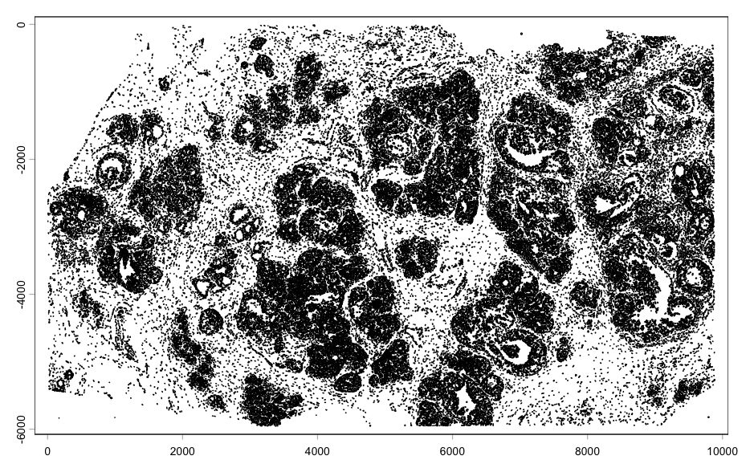
# transcript density
getFeatureInfo(g, "rna") |>
plot()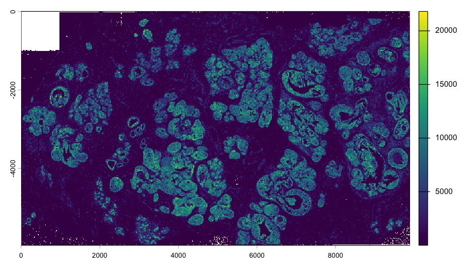
5.1 Save
Backed Giotto projects write snapshots of analysis state to the project directory. Save and load operations are faster than in-memory ones and can be treated as checkpoints.
# name param (optional) assigns the snapshot a name
# The return value is needed since saveGiotto makes changes during the write
# Either use the returned value or immediately load with `loadGiotto()`
g <- saveGiotto(g, name = "ingest")5.2 Aggregate
Aggregate the spatial transcripts with the default polygon layer (the cell outlines). This replaces the 10x expression matrix with one Giotto computes from the transcripts, and takes under a minute.
This step can be skipped: the 10x expression matrix read above is used otherwise.
Reading the transcripts makes creating the object take a while, but
it is a one-time step: the project directory keeps them, and
loadGiotto() reopens the saved object in seconds.
load_transcripts = FALSE skips them, which also means
individual transcripts cannot be plotted or re-aggregated later.
g <- aggregateFeatures(g)
g <- saveGiotto(g, name = "aggregated")6 Quality control and filtering
g <- addStatistics(g, expression_values = "raw")
cx <- pDataDT(g)
cat(sprintf("%s cells | median %d counts, %d features per cell\n",
format(nrow(cx), big.mark = ","),
as.integer(median(cx$total_expr)), as.integer(median(cx$nr_feats)))
)170,057 cells | median 2045 counts, 1501 features per cellWith about 2,000 counts per cell, the whole-transcriptome panel is far deeper than a targeted one. A low threshold of 50 detected genes removes only empty or fragmented outlines.
g <- filterGiotto(g,
expression_threshold = 1,
feat_det_in_min_cells = 1,
min_det_feats_per_cell = 50,
verbose = FALSE
)
cat(sprintf("%s cells x %s features retained\n",
format(nrow(pDataDT(g)), big.mark = ","),
format(nrow(fDataDT(g, feat_type = "rna")), big.mark = ","))
)169,418 cells x 18,028 features retained7 Normalize and select features
g <- normalizeGiotto(g,
scalefactor = 1e4,
logbase = exp(1),
log_offset = 1,
scale_feats = FALSE,
scale_cells = FALSE,
verbose = FALSE
)
g <- calculateHVF(g,
method = "cov_loess",
n_top_feats = 2000,
verbose = FALSE
)
hvf <- fDataDT(g, feat_type = "rna")[hvf == "yes"]$feat_ID
cat(length(hvf), "highly variable features\n")
g <- saveGiotto(g, name = "normalized")2000 highly variable features8 Dimension reduction
scale_unit = TRUE scales to unit variance on the fly, so
no dense z-scored matrix is ever written.
g <- runPCA(g,
feats_to_use = "hvf",
ncp = 50,
method = "auto",
scale_unit = TRUE,
center = TRUE,
verbose = FALSE
)
screePlot(g)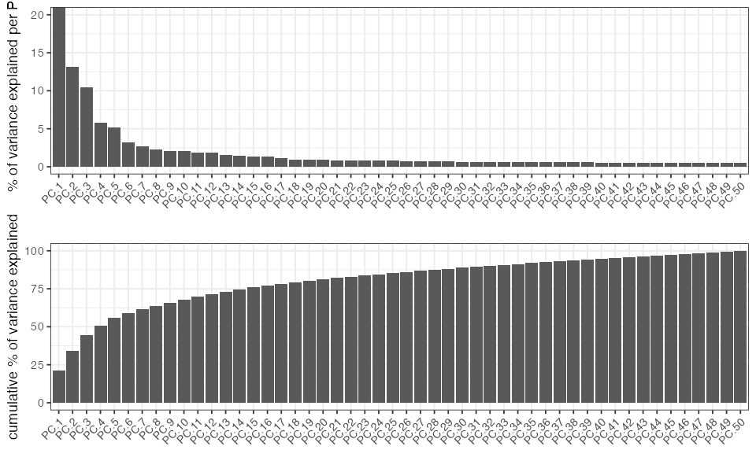
The kNN network is built first. runUMAP() reuses it
instead of searching for neighbors again, which also makes the UMAP
reproducible, and Leiden clusters on the same network.
dims_to_use <- 1:30 # use the top 30 PCs for UMAP and clustering
g <- createNearestNetwork(g,
type = "kNN",
dimensions_to_use = dims_to_use,
k = 30,
engine = "hnsw",
verbose = FALSE
)
g <- runUMAP(g,
dimensions_to_use = dims_to_use,
n_neighbors = 30,
min_dist = 0.3
)runUMAP: using the stored kNN 'kNN.pca' (29 neighbours per cell)9 Clustering
The cell typing tutorial builds a cluster tree and a per-cluster specificity measure that sort genuine cell types from fragments, so it is better to split too much than too little. Here we name the clusters directly from their markers.
leiden_res <- 0.8
g <- doLeidenCluster(g,
nn_network_to_use = "kNN",
network_name = "kNN.pca",
resolution = leiden_res,
n_iterations = 20,
objective_function = "modularity",
verbose = FALSE
)
clusters <- GiottoUtils::mixedsort(unique(as.character(pDataDT(g)$leiden_clus)))
cat(length(clusters), "clusters at resolution", leiden_res, "\n")
# one color per cluster, shared by the plots below
clus_colors <- stats::setNames(getDistinctColors(length(clusters)), clusters)18 clusters at resolution 0.8
g <- saveGiotto(g, name = "clustered")The object is saved to the project directory and can be reloaded with
loadGiotto(project_dir, name = "clustered").
plotUMAP(g,
cell_color = "leiden_clus",
color_as_factor = TRUE,
cell_color_code = clus_colors,
point_border_stroke = 0,
point_size = 0.1
)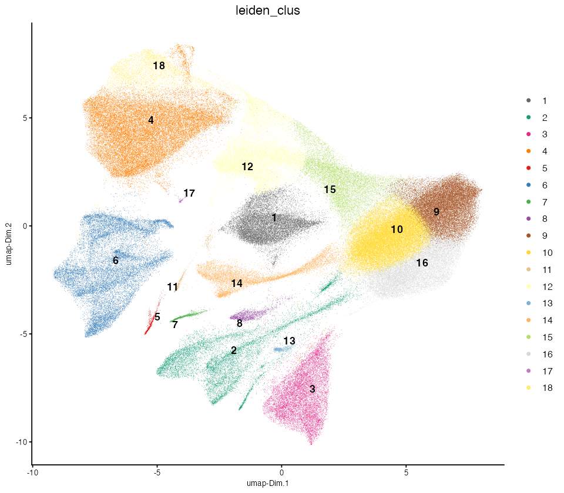
spatPlot2D(g,
cell_color = "leiden_clus",
color_as_factor = TRUE,
cell_color_code = clus_colors,
point_border_stroke = 0,
point_size = 0.2,
background_color = "black"
)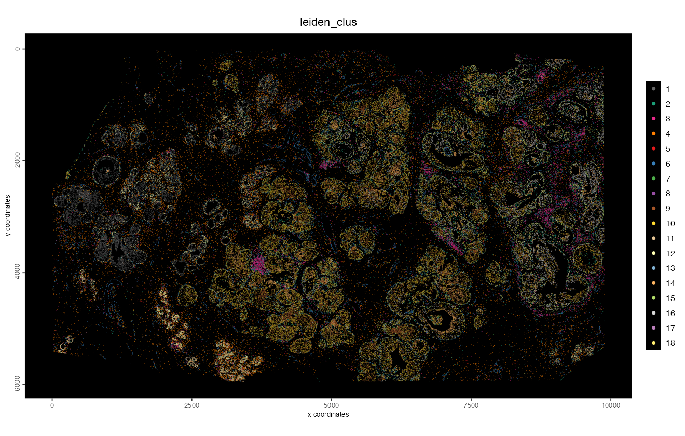
Establish an ROI and get a zoomed in plot with the polygons.
roi <- c(2500, 3500, -4500, -3500) # xmin/xmax/ymin/ymax
g <- crop(g, roi, view = "roi")
spatInSituPlotPoints(g,
polygon_fill = "leiden_clus",
polygon_fill_as_factor = TRUE,
polygon_fill_code = clus_colors,
polygon_line_size = 0,
view = "roi"
)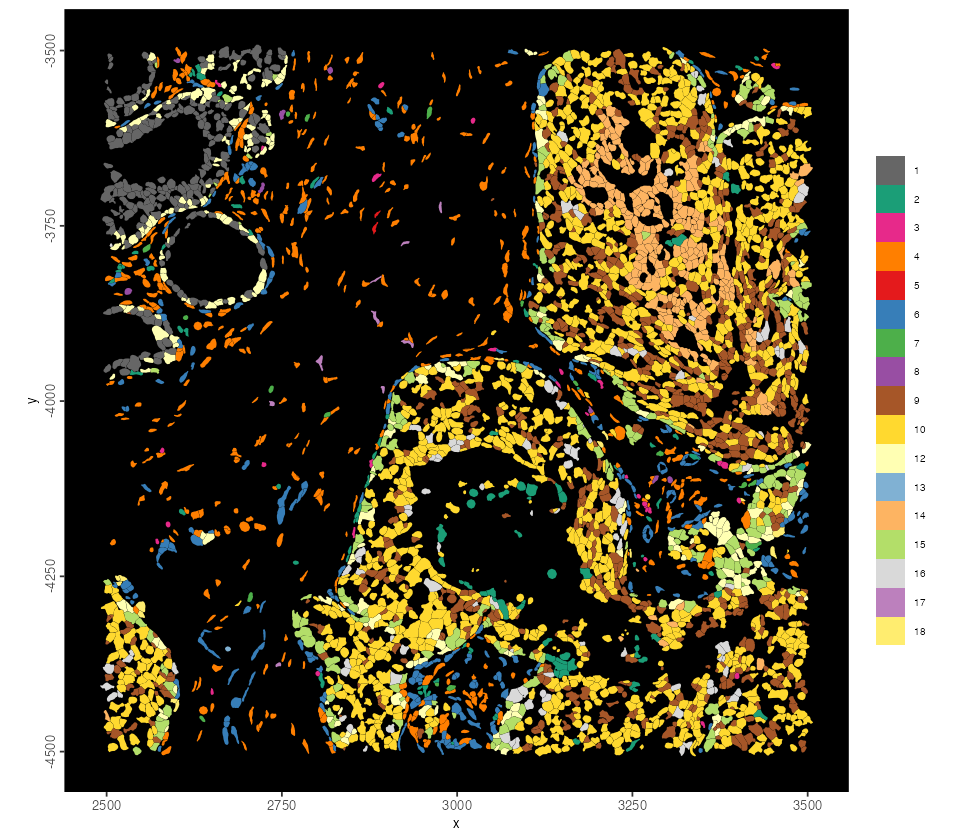
# refine the ROI region and plot with dapi (default) image
spatInSituPlotPoints(g,
polygon_fill = "leiden_clus",
polygon_fill_as_factor = TRUE,
polygon_fill_code = clus_colors,
polygon_line_size = 0.2,
polygon_alpha = 0.3,
xlim = c(3000, 3400),
ylim = c(-4250, -4000),
view = "roi",
show_image = TRUE
)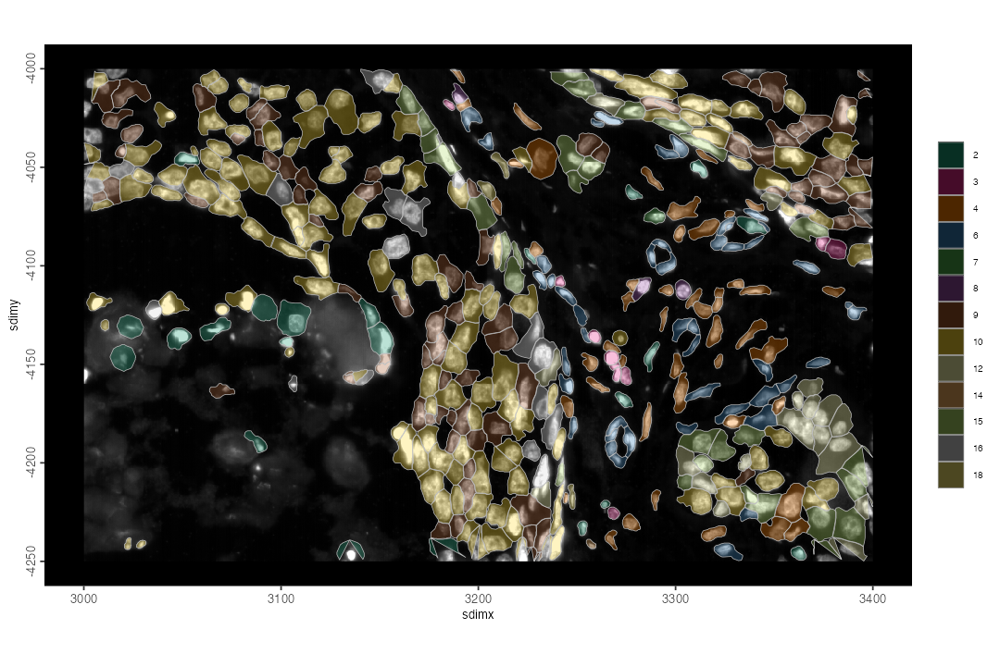
10 Cell types from cluster markers
findMarkers_one_vs_all() ranks the genes that set each
Leiden cluster apart from the others. The top eight per cluster:
markers <- findMarkers_one_vs_all(g,
method = "scran",
cluster_column = "leiden_clus",
min_feats = 5,
verbose = FALSE
)
top_markers <- markers[, .(top = paste(head(feats, 8), collapse = ", ")),
by = "cluster"]
top_markers[order(as.integer(cluster))] cluster top
<char> <char>
1: 1 NHERF1, NIBAN1, ANKRD30A, BMPR1B, PREX1, STC2, MUC1, MDM2
2: 2 LAPTM5, ITGB2, FCGR2A, CSF1R, CTSS, C1QA, CYBB, C1QC
3: 3 TRAC, CD3E, CD52, WIPF1, ITGB2, B2M, LAPTM5, TRBC2
4: 4 CXCL12, LAMB1, LRP1, ABCA6, COL6A1, GEM, COL6A2, LUM
5: 5 MMRN1, TGFBR2, FLT4, PROX1, TFPI, LYVE1, PKHD1L1, TBX1
6: 6 EPAS1, VWF, PECAM1, HSPG2, TGFBR2, SPARCL1, ENG, COL4A1
7: 7 KIT, CTSG, IL1RL1, CPA3, MS4A2, GATA2, VWA5A, NDST2
8: 8 MZB1, PIM2, IGKC, JCHAIN, HERPUD1, SEC11C, DERL3, PDK1
9: 9 CCND1, NHERF1, ELAPOR1, XBP1, TBC1D9, PLAT, PRPF19, STARD10
10: 10 CCND1, ELAPOR1, PLAT, TBC1D9, NHERF1, XBP1, GATA3, MLPH
11: 11 MYBPC1, ANKRD30A, TAT, FASN, XBP1, PIP, LRIG1, TFPI2
12: 12 TNS4, TAGLN, MYLK, LTBP2, FBXO32, SEMA3C, BHLHE41, SFRP1
13: 13 MS4A1, CD52, BANK1, OR4F17, RIPOR2, LTB, CD37, LAPTM5
14: 14 GABRP, CCL28, PROM1, KIT, SFRP1, EHF, GUCY1A1, SLC12A2
15: 15 CCND1, TFF1, TFF3, NHERF1, DSP, ELAPOR1, TBC1D9, RASSF3
16: 16 CCND1, NHERF1, GATA3, RASSF3, VAV3, PRPF19, XBP1, TBC1D9
17: 17 PLIN1, PLIN4, ADIPOQ, ALDH2, LPL, ACSL1, GPAM, CD36
18: 18 COL3A1, POSTN, AEBP1, COL5A2, COL5A1, COL6A1, LUM, COL6A2Each cluster is named from its markers and where it sits in the tissue:
- Four clusters (9, 10, 15, 16) share the luminal tumor program (CCND1, XBP1, GATA3, TFF1) and are kept as one type.
- Cluster 1 is a luminal tumor population marked by ANKRD30A and MUC1, and cluster 11 an apocrine-like one marked by PIP, MYBPC1 and FASN.
- Cluster 12 expresses TP63, KRT5 and KRT17 further down its marker list and lines the ducts: myoepithelial cells.
- Cluster 14 (KIT, GABRP, PROM1, KRT15) is the luminal progenitor population.
- Cluster 4 (CXCL12, PDGFRA, ABCA6) are fibroblasts, cluster 18 (POSTN, CTHRC1, FAP, COL5A1) cancer-associated fibroblasts.
Leiden cluster numbers can change between package versions or numbers of workers. Check the markers before reusing this mapping on your own run.
cell_types <- c(
"1" = "tumor, ANKRD30A+",
"9" = "tumor, luminal", "10" = "tumor, luminal",
"15" = "tumor, luminal", "16" = "tumor, luminal",
"11" = "tumor, PIP+",
"14" = "luminal progenitors",
"12" = "myoepithelial cells",
"4" = "fibroblasts", "18" = "CAFs",
"6" = "endothelial cells", "5" = "lymphatic endothelial cells",
"3" = "T cells", "13" = "B cells", "8" = "plasma cells",
"2" = "macrophages", "7" = "mast cells", "17" = "adipocytes"
)
g <- annotateGiotto(g,
annotation_vector = cell_types,
cluster_column = "leiden_clus",
name = "cell_type"
)
# one color per cell type, shared by the plots below
type_colors <- c(
"tumor, luminal" = "#c51b7d", "tumor, ANKRD30A+" = "#f1b6da",
"tumor, PIP+" = "#7a0177", "luminal progenitors" = "#ff7f00",
"myoepithelial cells" = "#e6ab02",
"fibroblasts" = "#33a02c", "CAFs" = "#b2df8a",
"endothelial cells" = "#e31a1c", "lymphatic endothelial cells" = "#fb9a99",
"T cells" = "#17becf", "B cells" = "#1f78b4", "plasma cells" = "#a6cee3",
"macrophages" = "#6a3d9a", "mast cells" = "#b15928", "adipocytes" = "#ffff99"
)
sort(table(pDataDT(g)$cell_type), decreasing = TRUE) tumor, luminal fibroblasts endothelial cells
67329 27258 16361
myoepithelial cells tumor, ANKRD30A+ macrophages
12533 11707 9783
T cells luminal progenitors CAFs
9545 6862 4169
plasma cells mast cells tumor, PIP+
1283 717 651
lymphatic endothelial cells B cells adipocytes
542 539 139
spatPlot2D(g,
cell_color = "cell_type",
color_as_factor = TRUE,
cell_color_code = type_colors,
point_border_stroke = 0,
point_size = 0.2,
background_color = "black"
)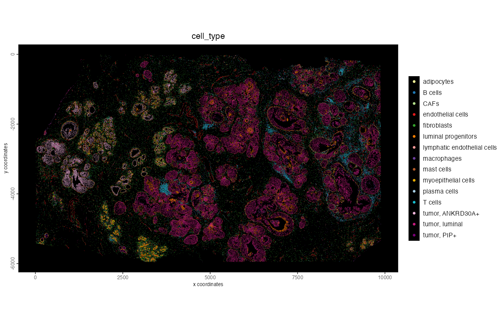
In the ROI, the myoepithelial cells outline the ducts, a cluster of luminal progenitors sits inside one tumor nest, and fibroblasts and vessels fill the stroma between them:
spatInSituPlotPoints(g,
polygon_fill = "cell_type",
polygon_fill_as_factor = TRUE,
polygon_fill_code = type_colors,
polygon_line_size = 0,
view = "roi"
)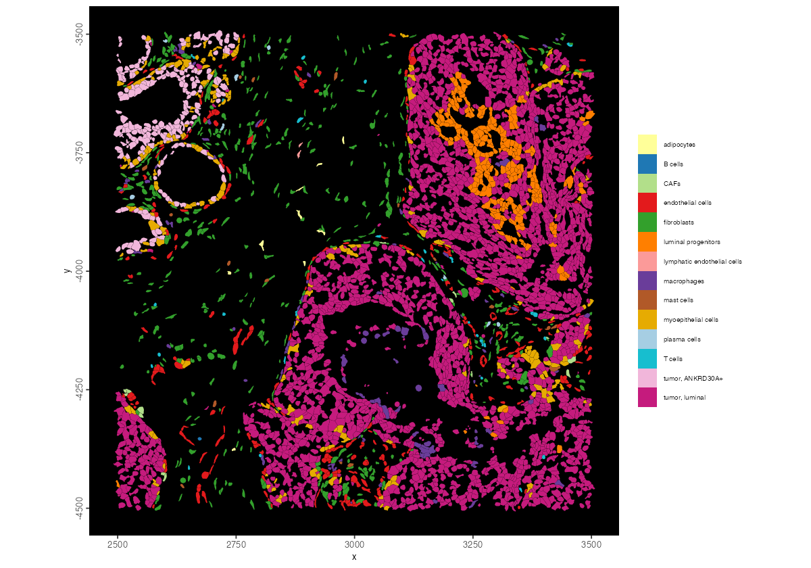
g <- saveGiotto(g, name = "annotated")11 Spatially variable genes
A spatial network links each cell to its neighbors. The Delaunay network connects every cell to the cells that share an edge of the triangulation of the cell centers.
g <- createSpatialNetwork(g,
method = "Delaunay",
delaunay_method = "delaunayn_geometry",
verbose = FALSE
)Moran’s I measures whether a gene’s expression is more similar
between neighboring cells than expected by chance.
spatialAutoCor() computes it for all 18,028 genes on the
disk-backed expression in about 10 seconds.
moran <- spatialAutoCor(g,
method = "moran",
spatial_network_name = "Delaunay_network",
return_gobject = FALSE
)
head(moran[, .(feats, statistic, z, adj.p.value)], 10) feats statistic z adj.p.value
<char> <num> <num> <num>
1: CCND1 0.6934436 474.5931 0
2: NHERF1 0.6852831 469.0080 0
3: ELAPOR1 0.6785076 464.3708 0
4: MSMB 0.6624656 453.3966 0
5: XBP1 0.6336424 433.6654 0
6: STARD10 0.6212348 425.1737 0
7: GATA3 0.6209205 424.9585 0
8: TFF1 0.6157652 421.4311 0
9: TBC1D9 0.6092279 416.9563 0
10: TFF3 0.6091648 416.9144 0The genes with the highest Moran’s I are all part of the luminal tumor program, the largest and most compact compartment of this section:
spatFeatPlot2D(g,
expression_values = "normalized",
feats = moran$feats[1:6],
gradient_style = "sequential",
point_size = 0.2,
point_border_stroke = 0,
background_color = "black",
cow_n_col = 2
)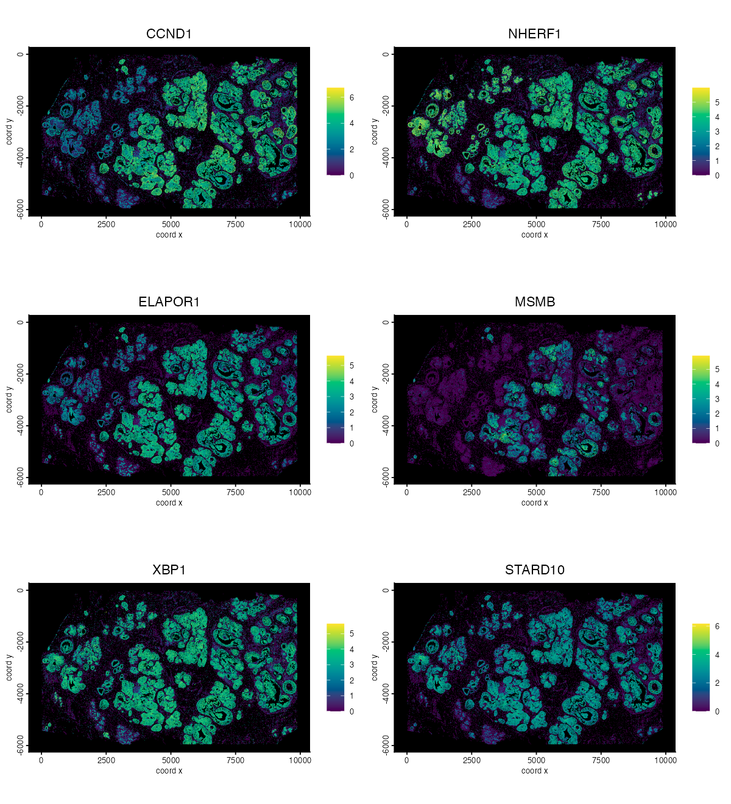
12 Spatial co-expression modules
spatialCoexpression() averages each cell’s expression
with its neighbors’ in the spatial network, correlates the genes on
these smoothed values, and clusters the correlation into modules. It
runs on the 500 genes with the highest Moran’s I.
spatial_genes <- moran$feats[1:500]
coexpr <- spatialCoexpression(g,
feats = spatial_genes,
spatial_network_name = "Delaunay_network",
n_modules = 12,
return_gobject = FALSE
)
coexpr$summary module size within_cor between_cor score
<int> <int> <num> <num> <num>
1: 10 24 0.48658359 -0.34059207 0.48658359
2: 12 15 0.42605743 -0.27962385 0.40008147
3: 11 8 0.38986133 -0.06374923 0.28193101
4: 9 11 0.34914690 -0.14220437 0.27988045
5: 6 13 0.39533533 0.01806930 0.25354382
6: 2 214 0.62338634 0.27263228 0.24111066
7: 4 33 0.33589003 0.09998138 0.18790580
8: 1 79 0.62735500 0.36000119 0.18783432
9: 7 44 0.54614852 0.35714032 0.16508301
10: 3 40 0.41691558 0.28860478 0.15459361
11: 8 12 0.32361456 0.20659439 0.14653706
12: 5 7 0.09562919 -0.05725352 0.06853375The summary ranks the modules: a high within_cor and a
low between_cor mean a module is coherent and distinct from
the others. Most of the 500 genes fall into large, mutually correlated
tumor modules (2, 1, 7); the small stromal and immune modules rank
highest because they are the most distinct.
heatmapCoexpression(g, coexpr)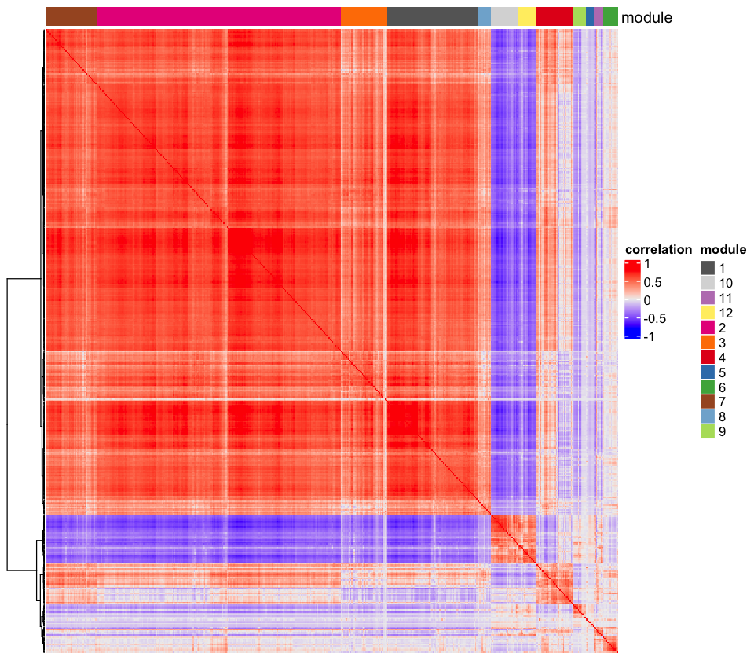
The genes that best represent each of the four top-ranked modules:
top_modules <- coexpr$summary$module[1:4]
coexpr$feats[module %in% top_modules][
order(match(module, top_modules), -module_cor),
head(.SD, 5), by = "module"
] module feat_ID module_cor
<int> <char> <num>
1: 10 LAMB1 0.6013472
2: 10 CXCL12 0.5911660
3: 10 COL6A2 0.5769407
4: 10 LRP1 0.5745794
5: 10 COL6A1 0.5694322
6: 12 HSPG2 0.5284842
7: 12 COL4A1 0.4930708
8: 12 TGFBR2 0.4692459
9: 12 EPAS1 0.4635048
10: 12 ENG 0.4617396
11: 11 TNS4 0.4795486
12: 11 MYLK 0.4532510
13: 11 FBXO32 0.4487561
14: 11 TAGLN 0.3841451
15: 11 NFIB 0.3490831
16: 9 CD52 0.4688161
17: 9 TRAC 0.4546557
18: 9 ITGB2 0.4376084
19: 9 LAPTM5 0.4202442
20: 9 CD3E 0.4201818They match the cell types named above: fibroblast stroma (module 10), vessels (12), the myoepithelial layer (11) and T cell infiltrates (9).
The same call with the default return_gobject = TRUE
adds the module scores to the object, one per cell and module:
g <- spatialCoexpression(g,
feats = spatial_genes,
spatial_network_name = "Delaunay_network",
n_modules = 12
)Each module’s color scale is capped at the 99th percentile of its non-zero scores, so a few high-scoring cells do not wash out the rest:
module_scores <- getSpatialEnrichment(g, name = "spatial_module",
output = "data.table")
for (m in as.character(top_modules)) {
v <- module_scores[[m]]
spatCellPlot2D(g,
spat_enr_names = "spatial_module",
cell_annotation_values = m,
gradient_style = "sequential",
gradient_limits = c(0, stats::quantile(v[v > 0], 0.99)),
point_size = 0.2,
point_border_stroke = 0,
background_color = "black"
)
}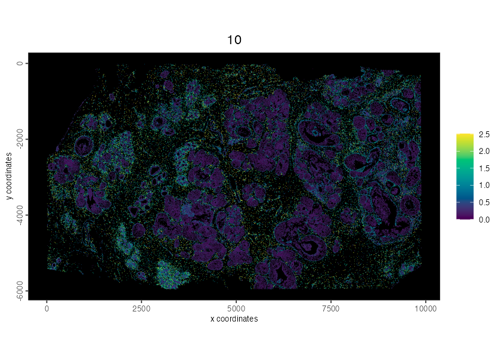
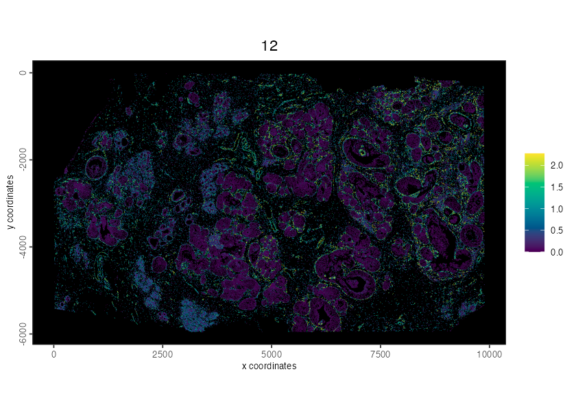
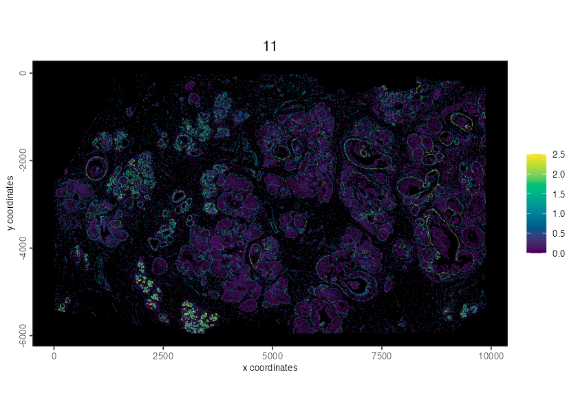
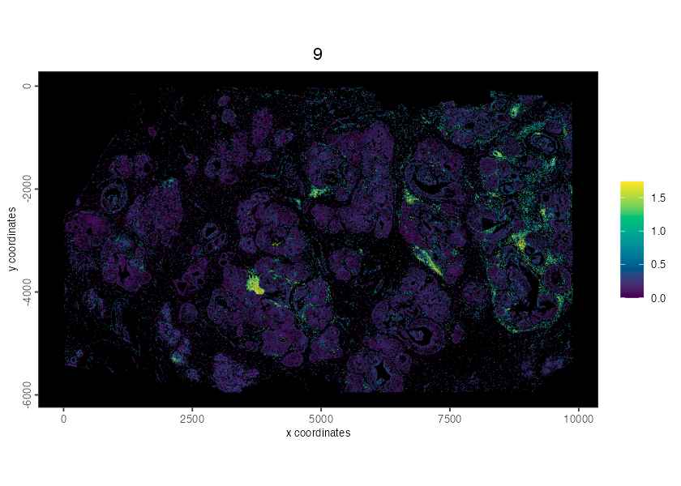
13 Spatial enrichment
PAGE scores each cell for a set of marker genes per cell type, here short signatures for the main cell types of breast tissue. It runs on the disk-backed expression without loading it into memory.
signatures <- list(
luminal = c("EPCAM", "KRT8", "KRT18", "KRT19", "ESR1", "GATA3", "FOXA1"),
myoepithelial = c("KRT5", "KRT14", "KRT17", "TP63", "OXTR", "MYLK"),
fibroblast = c("COL1A1", "COL1A2", "COL3A1", "DCN", "LUM", "PDGFRA", "FBLN1"),
endothelial = c("PECAM1", "VWF", "CDH5", "CLDN5", "PLVAP", "KDR"),
T_NK = c("CD3E", "CD3D", "CD2", "TRAC", "NKG7", "GZMA", "CD8A"),
B_plasma = c("MS4A1", "CD79A", "JCHAIN", "MZB1", "IGKC"),
myeloid = c("CD68", "CD163", "LYZ", "C1QA", "C1QB", "CSF1R", "AIF1"),
mast = c("TPSAB1", "CPA3", "KIT", "MS4A2"),
adipocyte = c("ADIPOQ", "PLIN1", "LEP", "FABP4")
)
sign_matrix <- makeSignMatrixPAGE(names(signatures), signatures)
g <- runPAGEEnrich(g,
sign_matrix = sign_matrix,
expression_values = "normalized",
min_overlap_genes = 3, # the mast and adipocyte signatures have 4 genes
verbose = FALSE
)As for the modules, each signature’s color scale is capped, here at the 1st and 99th percentile of its scores:
page_scores <- getSpatialEnrichment(g, name = "PAGE", output = "data.table")
for (sig in c("luminal", "myoepithelial", "fibroblast", "endothelial",
"T_NK", "myeloid")) {
v <- page_scores[[sig]]
spatCellPlot2D(g,
spat_enr_names = "PAGE",
cell_annotation_values = sig,
gradient_style = "sequential",
gradient_limits = stats::quantile(v, c(0.01, 0.99)),
point_size = 0.2,
point_border_stroke = 0,
background_color = "black"
)
}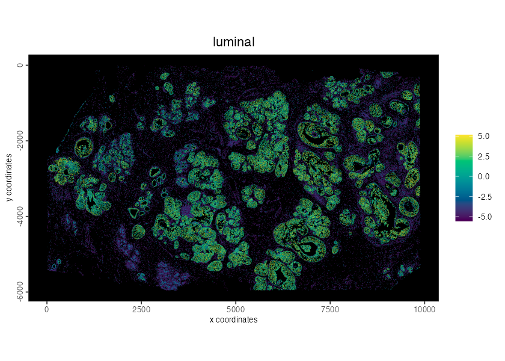
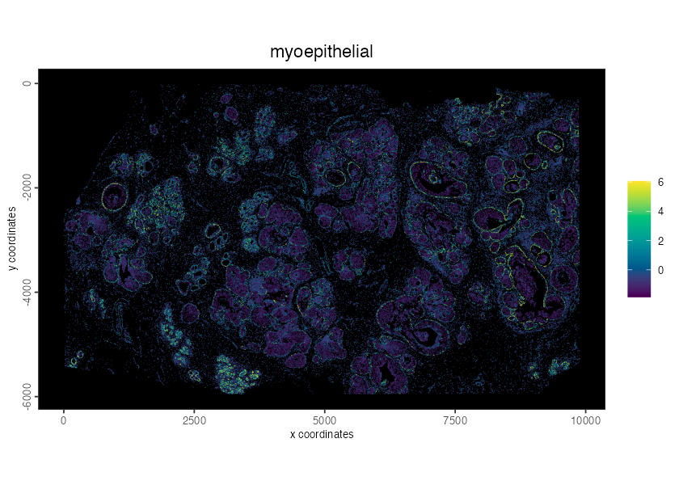
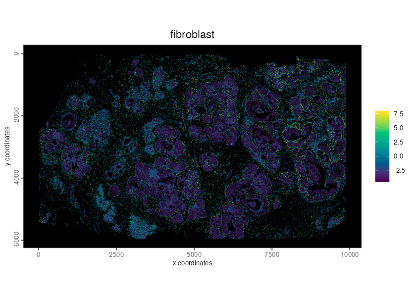
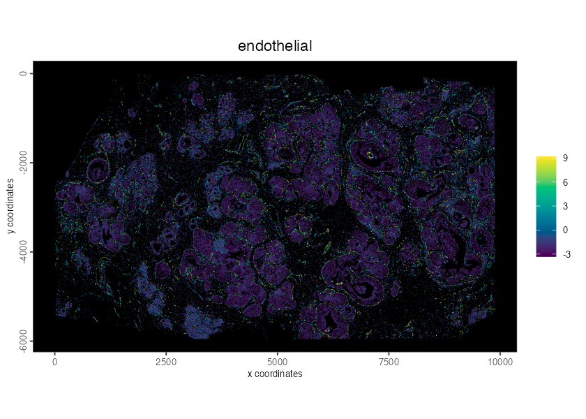
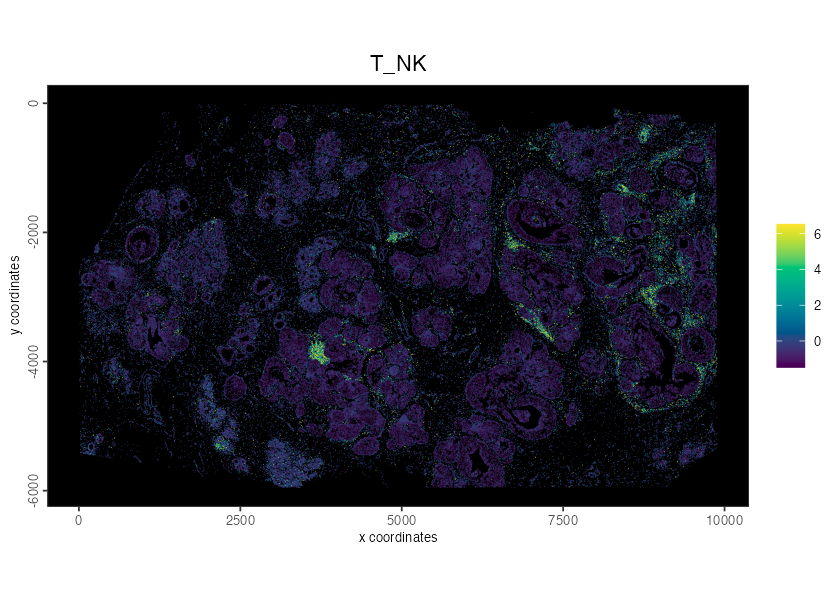
The highest-scoring signature per cell type checks the marker-based names against an independent gene set:
page <- merge(page_scores, pDataDT(g)[, .(cell_ID, cell_type)], by = "cell_ID")
scored <- intersect(names(signatures), names(page))
page_mean <- page[, lapply(.SD, mean), by = "cell_type", .SDcols = scored]
page_mean[, .(cell_type, top_signature = scored[max.col(as.matrix(.SD))]),
.SDcols = scored][order(cell_type)] cell_type top_signature
<char> <char>
1: B cells B_plasma
2: CAFs fibroblast
3: T cells T_NK
4: adipocytes adipocyte
5: endothelial cells endothelial
6: fibroblasts fibroblast
7: luminal progenitors mast
8: lymphatic endothelial cells endothelial
9: macrophages myeloid
10: mast cells mast
11: myoepithelial cells myoepithelial
12: plasma cells B_plasma
13: tumor, ANKRD30A+ luminal
14: tumor, PIP+ mast
15: tumor, luminal luminalThirteen of the fifteen types agree. The two exceptions show a limit of short signatures: the luminal progenitors express KIT, one of only four genes in the mast signature, and that is enough to outscore the luminal signature. Longer or more specific gene sets avoid this.
g <- saveGiotto(g, name = "spatial")14 Cell-cell interactions
cellProximityMotifs() counts which cell types are
neighbors in the spatial network more or less often than expected when
the labels are shuffled. Pairs of neighbors (size = 2) give
the classic proximity enrichment:
pairs <- cellProximityMotifs(g,
spatial_network_name = "Delaunay_network",
cluster_column = "cell_type",
size = 2L,
n_perm = 1000L
)
plotMotifEnrichment(g, pairs)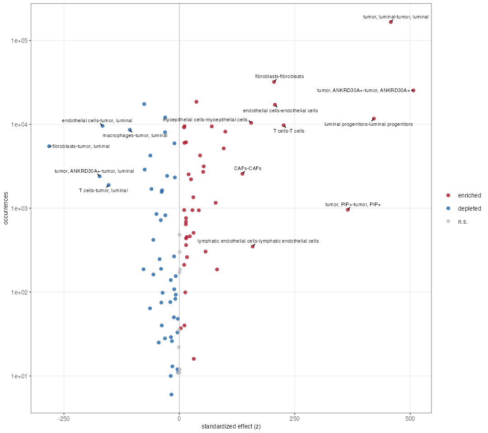
Each cell type is most enriched next to its own kind, as expected for tumor nests, ducts and stroma. Contacts between the stroma and the tumor (fibroblasts, endothelial cells, T cells next to luminal tumor cells) are depleted, because the tumor cells sit in compact nests.
Motifs of three cells (size = 3) with the conditional
null hold the observed pairs fixed, so a triplet that is still enriched
is enriched beyond what its pairs already explain:
triplets <- cellProximityMotifs(g,
spatial_network_name = "Delaunay_network",
cluster_column = "cell_type",
size = 3L,
null = "conditional",
n_perm = 1000L
)
head(triplets[order(-z), .(motif_id, observed, expected, fold, p_adj)], 10) motif_id observed expected fold p_adj
<char> <num> <num> <num> <num>
1: size3_open_tumor, luminal-T cells-T cells 311 73.874 4.209871 0.008589671
2: size3_open_macrophages-tumor, luminal-tumor, luminal 6791 4787.419 1.418510 0.008589671
3: size3_open_tumor, luminal-myoepithelial cells-myoepithelial cells 3298 2036.807 1.619201 0.008589671
4: size3_open_fibroblasts-CAFs-CAFs 260 56.240 4.623044 0.008589671
5: size3_open_fibroblasts-CAFs-tumor, luminal 907 328.566 2.760480 0.008589671
6: size3_closed_macrophages-macrophages-tumor, luminal 1484 974.486 1.522854 0.008589671
7: size3_closed_CAFs-fibroblasts-tumor, luminal 434 206.977 2.096851 0.008589671
8: size3_open_tumor, luminal-fibroblasts-fibroblasts 1158 536.493 2.158462 0.008589671
9: size3_closed_CAFs-CAFs-fibroblasts 270 118.566 2.277213 0.008589671
10: size3_closed_endothelial cells-myoepithelial cells-tumor, luminal 2316 1544.338 1.499672 0.008589671In an open motif the first cell type listed is the center that links the other two. The glyphs draw the top-ranked triplets:
plotMotifGlyphs(g, triplets, cell_color_code = type_colors)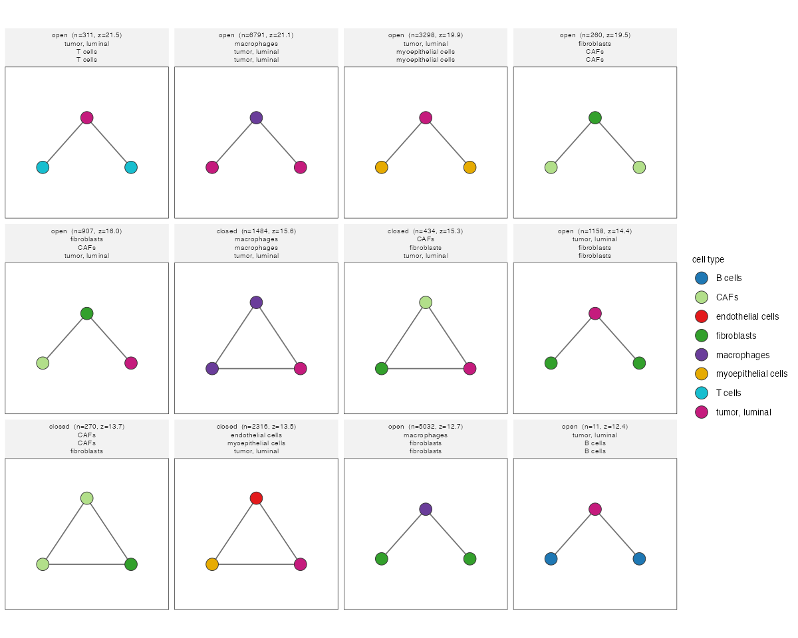
The most enriched triplet is a luminal tumor cell with two T cells on either side, four times more often than its pairs predict. It marks the places where T cells penetrate the tumor nests:
top_triplet <- triplets[order(-z)]$motif_id[1]
spatMotifPlot(g,
motif_id = top_triplet,
cluster_column = "cell_type",
spatial_network_name = "Delaunay_network"
)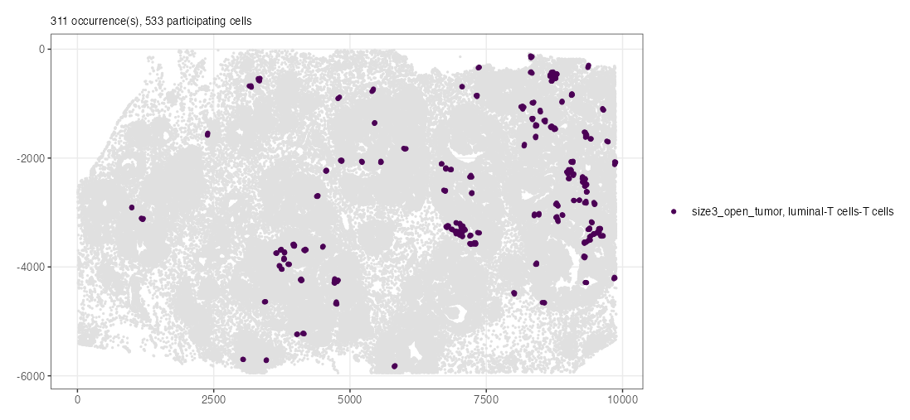
g <- saveGiotto(g, name = "analyzed")15 Further reading
Suggested further topics:
- Continue with Cell typing with a cluster tree for a more systematic annotation than the cluster markers above
- GiottoLens for interactive visualization and annotation
16 Session info
R version 4.5.1 (2025-06-13)
Platform: aarch64-apple-darwin20
Running under: macOS Sonoma 14.5
Matrix products: default
BLAS: /Library/Frameworks/R.framework/Versions/4.5-arm64/Resources/lib/libRblas.0.dylib
LAPACK: /Library/Frameworks/R.framework/Versions/4.5-arm64/Resources/lib/libRlapack.dylib; LAPACK version 3.12.1
locale:
[1] en_US/en_US/en_US/C/en_US/en_US
time zone: America/New_York
tzcode source: internal
attached base packages:
[1] stats graphics grDevices utils datasets methods base
other attached packages:
[1] GiottoDisk_0.0.0.6 Giotto_4.3.5 GiottoClass_0.7.18 arrow_23.0.1.2
loaded via a namespace (and not attached):
[1] colorRamp2_0.1.0 gridExtra_2.3 rlang_1.1.7 magrittr_2.0.4
[5] otel_0.2.0 GiottoUtils_0.2.7 matrixStats_1.5.0 compiler_4.5.1
[9] systemfonts_1.3.2 vctrs_0.7.2 pkgconfig_2.0.3 SpatialExperiment_1.20.0
[13] crayon_1.5.3 fastmap_1.2.0 backports_1.5.1 magick_2.9.1
[17] XVector_0.48.0 labeling_0.4.3 ggraph_2.2.2 UCSC.utils_1.4.0
[21] ragg_1.5.2 purrr_1.2.1 bit_4.6.0 bluster_1.18.0
[25] cachem_1.1.0 beachmat_2.24.0 GenomeInfoDb_1.44.3 jsonlite_2.0.0
[29] DelayedArray_0.34.1 smotif_0.2.0 BiocParallel_1.42.2 tweenr_2.0.3
[33] terra_1.9-11 cluster_2.1.8.3 irlba_2.3.7 parallel_4.5.1
[37] R6_2.6.1 RColorBrewer_1.1-3 smotifrs_0.2.0 parallelly_1.46.1
[41] GenomicRanges_1.60.0 scattermore_1.2 Rcpp_1.1.2 Seqinfo_1.0.0
[45] assertthat_0.2.1 SummarizedExperiment_1.38.1 R.utils_2.13.0 IRanges_2.42.0
[49] Matrix_1.7-3 igraph_2.2.2 tidyselect_1.2.1 abind_1.4-8
[53] viridis_0.6.5 codetools_0.2-20 listenv_0.10.1 lattice_0.22-7
[57] tibble_3.3.1 Biobase_2.68.0 withr_3.0.2 S7_0.2.1
[61] future.mirai_1.0.0 future_1.70.0 polyclip_1.10-7 filelock_1.0.3
[65] pillar_1.11.1 MatrixGenerics_1.20.0 checkmate_2.3.4 stats4_4.5.1
[69] plotly_4.12.0 generics_0.1.4 RcppHNSW_0.7.0 nanoarrow_0.9.0
[73] S4Vectors_0.48.1 ggplot2_4.0.2 mirai_2.7.2 scales_1.4.0
[77] globals_0.19.1 gtools_3.9.5 glue_1.8.0 lazyeval_0.2.2
[81] tools_4.5.1 tilework_1.0.0 GiottoVisuals_0.2.16 BiocNeighbors_2.2.0
[85] data.table_1.18.2.1 ScaledMatrix_1.16.0 graphlayouts_1.2.3 tidygraph_1.3.1
[89] cowplot_1.2.0 grid_4.5.1 tidyr_1.3.2 colorspace_2.1-2
[93] SingleCellExperiment_1.30.1 GenomeInfoDbData_1.2.14 BiocSingular_1.24.0 ggforce_0.5.0
[97] cli_3.6.5 rsvd_1.0.5 textshaping_1.0.5 S4Arrays_1.8.1
[101] viridisLite_0.4.3 dplyr_1.2.0 gtable_0.3.6 R.methodsS3_1.8.2
[105] digest_0.6.39 BiocGenerics_0.54.1 SparseArray_1.8.1 ggrepel_0.9.8
[109] nanonext_1.10.2 rjson_0.2.23 htmlwidgets_1.6.4 farver_2.1.2
[113] R.oo_1.27.1 memoise_2.0.1 htmltools_0.5.9 lifecycle_1.0.5
[117] httr_1.4.8 bit64_4.6.0-1 MASS_7.3-65